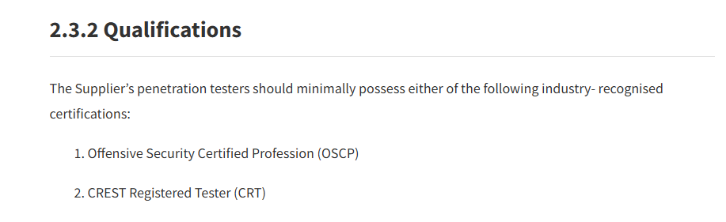

Certified Certification Collector
I did 6 certifications in 9 months, so that you don’t have to!

Introduction
In 2024, I decided to spend the year collecting as much knowledge in the form of certifications as physically possible in order to fully utilize the Industry Preparation for Pre-graduate (iPREP) Programme offered by The InfoComm Media Development Authority (IMDA).
The iPREP Programme is a scheme that greatly subsidizes (up to SGD$500.00) the cost of selected certifications for students currently enrolled in a local institute of higher education. Unfortunately, a quick google search of the programme does not yield many results - but the National University of Singapore (NUS) and the Singapore Management University (SMU) although the latter seems to be locked behind a login wall.
Thankfully for me, Singapore Polytechnic (SP) is also a participating institution and I was able to take advantage of the scheme.
I managed to complete the following certifications during my full-time study at SP (in no particular order):
- OffSec Certified Professional (OSCP+) ❌
- Certified Penetration Testing Specialist (CPTS) ❌
- Certified Red Team Lead (CRTL) ❌
- Certified Red Team Operator (CRTO) ✅ - SGD$500
- Certified Red Team Expert (CRTE) ❌
- Certified Red Team Professional (CRTP) ❌
- Certified Azure Red Team Professional (CARTP) ❌
- eLearnSecurity Junior Penetration Tester (eJPTv2) ✅ - Full Reimbursement
I have not been reimbursed for all of the above certifications, and cannot attest to whether or not the above certifications are still eligible for the iPREP Programme at this point in time. This post will be edited to reflect the current state of the reimbursement, as the reimbursement process can take a couple of months.
Certification Dilemma
A fair warning that the remainder of this post may have controversial opinions, especially in the context of local educational instutions.

Many people have asked me about the value of certifications and whether they are worth the time and effort - especially those in a similar situation to mine, currently enrolled in a local institute of higher education.
Is it worth the time?
I will be addressing the question of whether or not certifications are worth the time in the context of a full-time student in high school, or university.
I firmly believe that pursuing certifications doesn’t require dedicating a significant amount of time. In fact, a large portion of the time I spent on certifications was during lectures and tutorials, where my lecturer was quite literally reading directly from the slides.

Generally, the only times I dedicated time outside of my daily “working” hours to certifications was when I was doing the examination for the course - a couple hours on the weekend or holidays were dedicated to this.
If you’re able to multitask relatively well, and relate to the above situations, then I would say that grinding out certifications is definitely worth the time - and probably more useful than listening to your lecturer drone on about the same topic for the 5th time.
Is it worth the effort?
Contrary to what I just said, I believe that some certifications are absolutely worth grinding out - even if it means sacrificing a couple of hours after school, or on the weekends.
If you intend to pursue a career in offensive security in Singapore, you will minially require the OffSec Certified Professional (OSCP) certification or the CREST Registered Tester (CRT) certification.

For Singaporean pre-enlistees, you will have plenty of time during your National Service (NS) to grind out the OSCP certification. For those who have completed their NS or are not required to serve (female, non-Singaporean, etc.), I would recommend grinding out the OSCP certification as soon as possible.
If the latter applies to you, and are currently enrolled in a Polytechnic - then it’s great news because the work load in Polytechnic is significantly less than that of a University. More importantly, the possibility of failure isn’t as daunting, as you have plenty of time to retake the examination before entering the workforce.
If you intend to join the workforce directly after graduating from a Polytechnic, then you will absolutely require the OSCP (and more) to be even be considered for a junior role in most offensive security teams. (it’s not up to them, OSCP/CRT is the industry requirement in order to remain compliant).